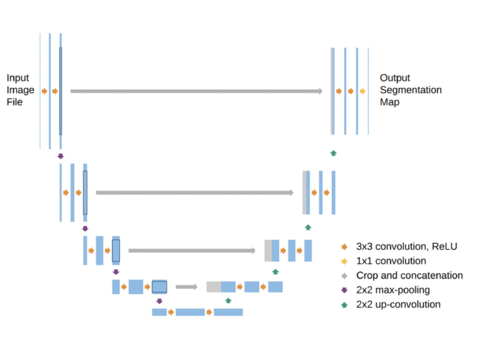
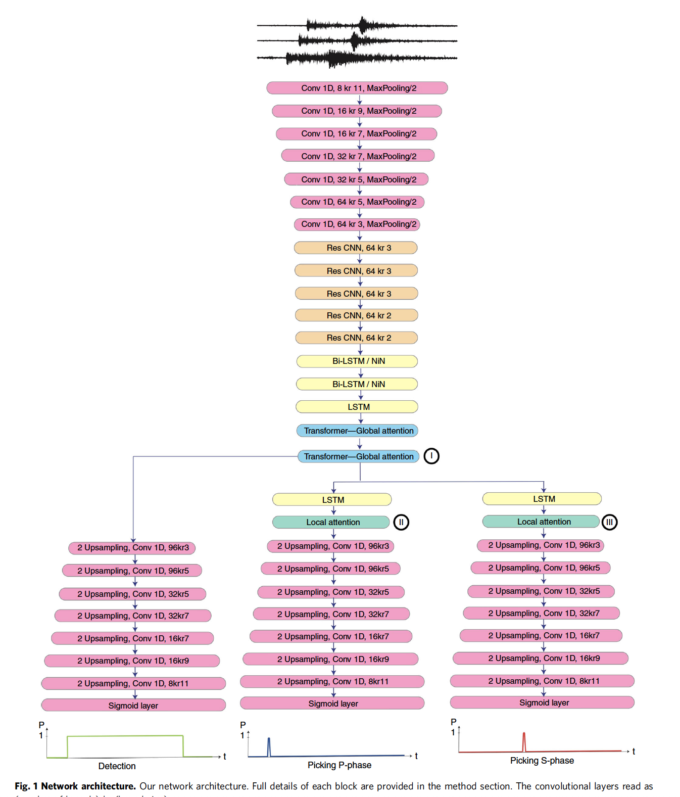

4.5 Auto-encoders
Contents
4.5 Auto-encoders#
Autoencoders are neural networks that learn to efficiently compress and encode data then learn to reconstruct the data back from the reduced encoded representation to a representation that is as close to the original input as possible. Therefore, autoencoders reduce the dimensionality of the input data i.e. reducing the number of features that describe input data.
They are popular for data denoising, data compression, feature extraction, image reconstruction and segmentation.

The architecture of auto-encoders are typically symmetrical:
the encoder: branch of the network that encodes the data (feature extraction). The branch may contain blocks of neural networks such as linear layers, convolutional layers,
the bottleneck: smallest layer of the network that contains the smallest number of features, the lowest dimension of the data representation.
The decoder: branch of the network that takes the features and reconstruct the original data.
Find interesting overview of several canonical architectures of auto-encoders: https://lilianweng.github.io/lil-log/2018/08/12/from-autoencoder-to-beta-vae.html
import numpy as np
import matplotlib.pyplot as plt
import pandas as pd
import h5py
import sklearn
from sklearn.model_selection import train_test_split
from torchinfo import summary
import torch
from torch.utils.data import Dataset, DataLoader
from sklearn.datasets import load_digits,fetch_openml
from sklearn.preprocessing import StandardScaler
from torch.utils.data.sampler import SubsetRandomSampler
from torchvision.transforms import transforms, ToTensor, Compose,Normalize
from sklearn.model_selection import train_test_split
from torchvision import datasets
import torch
import torch.nn as nn
import numpy as np
import os
# Check if a GPU is available
device = torch.device("cuda" if torch.cuda.is_available() else "cpu")
dataset = datasets.FashionMNIST(root="./",download=True,
transform=Compose([ToTensor(),Normalize([0.5],[0.5])]))
L=len(dataset)
# Training set
Lt = int(0.8*L)
train_data, val_data = torch.utils.data.random_split(dataset, [Lt,L-Lt])
loaded_train = DataLoader(train_data, batch_size=50,shuffle=True)
loaded_test = DataLoader(val_data, batch_size=50,shuffle=True)
X, y = next(iter(loaded_train))
print(X.shape)
<torch.utils.data.dataset.Subset object at 0x2af90f8b0>
torch.Size([50, 1, 28, 28])
Here is the example of an auto-encoder that only has fully connected layers.
class StackedEncoder(nn.Module):
def __init__(self):
super(StackedEncoder, self).__init__() # inherit from parent class
self.flatten = nn.Flatten() # flatten the input
self.fc1 = nn.Linear(28*28, 100) # 28*28 input features, 100 output features
self.fc2 = nn.Linear(100, 30) # 100 input features, 30 output features
self.activation = nn.SELU() # activation function
def forward(self, x):
x = self.flatten(x)
x = self.activation(self.fc1(x))
x = self.activation(self.fc2(x)) # bottleneck layer
return x
class StackedDecoder(nn.Module):
def __init__(self):
super(StackedDecoder, self).__init__() # inherit from parent class
self.fc1 = nn.Linear(30, 100) # 30 input features, 100 output features
self.fc2 = nn.Linear(100, 28*28) # 100 input features, 28*28 output features
self.activation = nn.SELU() # activation function
self.sigmoid = nn.Sigmoid() # sigmoid function
def forward(self, x):
x = self.activation(self.fc1(x))
x = self.sigmoid(self.fc2(x))
return x
class StackedAE(nn.Module): # general stacked autoencoder
def __init__(self, encoder, decoder):
super(StackedAE, self).__init__() # inherit from parent class
self.encoder = encoder # encoder: it could be any encoder branch
self.decoder = decoder # decoder: it could be any decoder branc
def forward(self, x):
x = self.encoder(x)
x = self.decoder(x).view(-1, 1, 28, 28) # reshape the output
return x
# Instantiate the models
stacked_encoder = StackedEncoder()
stacked_decoder = StackedDecoder()
stacked_ae = StackedAE(stacked_encoder, stacked_decoder).to(device) # send the model to GPU
# Print model summary
summary(stacked_ae, input_size=(1000, 28, 28))
==========================================================================================
Layer (type:depth-idx) Output Shape Param #
==========================================================================================
StackedAE [1000, 1, 28, 28] --
├─StackedEncoder: 1-1 [1000, 30] --
│ └─Flatten: 2-1 [1000, 784] --
│ └─Linear: 2-2 [1000, 100] 78,500
│ └─SELU: 2-3 [1000, 100] --
│ └─Linear: 2-4 [1000, 30] 3,030
│ └─SELU: 2-5 [1000, 30] --
├─StackedDecoder: 1-2 [1000, 784] --
│ └─Linear: 2-6 [1000, 100] 3,100
│ └─SELU: 2-7 [1000, 100] --
│ └─Linear: 2-8 [1000, 784] 79,184
│ └─Sigmoid: 2-9 [1000, 784] --
==========================================================================================
Total params: 163,814
Trainable params: 163,814
Non-trainable params: 0
Total mult-adds (M): 163.81
==========================================================================================
Input size (MB): 3.14
Forward/backward pass size (MB): 8.11
Params size (MB): 0.66
Estimated Total Size (MB): 11.90
==========================================================================================
Function to train the model
def train(model, n_epochs, trainloader, testloader=None,learning_rate=0.001 ):
# Create directory for saving model
dir1 = './stacked_ae_checkpoint'
os.makedirs(dir1,exist_ok=True)
# Define loss and optimization method
criterion = nn.MSELoss()
optimizer = torch.optim.Adam(model.parameters(), lr=learning_rate)
# # Save loss and error for plotting
loss_time = np.zeros(n_epochs)
loss_val_time = np.zeros(n_epochs)
# # Loop on number of epochs
for epoch in range(n_epochs):
# Initialize the loss
running_loss = 0
# Loop on samples in train set
for data in trainloader:
# Get the sample and modify the format for PyTorch
inputs= data[0].to(device) # send data to GPU
inputs = inputs.float()
# Set the parameter gradients to zero
optimizer.zero_grad()
outputs = model(inputs)
loss = criterion(outputs, inputs) # the loss is the difference between the input and the reconstructed input
# Propagate the loss backward
loss.backward()
# Update the gradients
optimizer.step()
# Add the value of the loss for this sample
running_loss += loss.item()
# Save loss at the end of each epoch
loss_time[epoch] = running_loss/len(trainloader)
checkpoint = {
'epoch': epoch + 1,
'state_dict': model.state_dict(),
'optimizer': optimizer.state_dict()
}
f_path = dir1+'/checkpoint.pt'
torch.save(checkpoint, f_path)
# After each epoch, evaluate the performance on the test set
if testloader is not None:
running_val_loss = 0
# We evaluate the model, so we do not need the gradient
with torch.no_grad(): # Context-manager that disabled gradient calculation.
# Loop on samples in test set
for data in testloader:
# Get the sample and modify the format for PyTorch
inputs = data[0].to(device) # send data to GPU
inputs = inputs.float()
# Use model for sample in the test set
outputs = model(inputs)
# Compare predicted label and true label
loss = criterion(outputs, inputs) # the loss is the difference between the input and the reconstructed input
# _, predicted = torch.max(outputs.data, 1)
running_val_loss += loss.item()
loss_val_time[epoch] = running_val_loss/len(testloader)
# Print intermediate results on screen
if testloader is not None:
print('[Epoch %d] train loss: %.3f - val loss: %.3f' %
(epoch + 1, running_loss/len(trainloader), running_val_loss/len(testloader)))
else:
print('[Epoch %d] loss: %.3f' %
(epoch + 1, running_loss/len(trainloader)))
# Save history of loss and test error
if testloader is not None:
return (loss_time, loss_val_time)
else:
return (loss_time)
The loss function in this case is not a MSE but instead a multilabel binary classifier on the probability of the pixel.
(loss, loss_val) = train(stacked_ae, 5,loaded_train, loaded_test,learning_rate=0.005)
[Epoch 1] train loss: 0.596 - val loss: 0.594
[Epoch 2] train loss: 0.596 - val loss: 0.593
[Epoch 3] train loss: 0.595 - val loss: 0.593
[Epoch 4] train loss: 0.595 - val loss: 0.593
[Epoch 5] train loss: 0.595 - val loss: 0.593
Plot the loss curve
plt.plot(loss , label='Training loss')
plt.plot(loss_val , label='Validation loss')
[<matplotlib.lines.Line2D at 0x2d0523130>]
We can visualize the reconstruction images.
def plot_image(image):
plt.imshow(image,cmap="binary")
plt.axis("off")
def show_reconstruction(model,n_images=5):
reconstruction=stacked_ae(X[:n_images])
for image_index in range(n_images):
plt.subplot(2,n_images,1+image_index)
crap=X[image_index].detach().numpy().squeeze()
plot_image(crap)
plt.subplot(2,n_images,1+n_images+image_index)
crap2=reconstruction[image_index].detach().numpy().squeeze()
plot_image(crap2)
show_reconstruction(stacked_ae)
This is not bad, but not great either. One could imagine training for longer or changing the architecture to include more layers or convolutional layers.
Convolutional autoencoder#
Auto-encoders that have convolutional layers
# Define the CNN autoencoder model in PyTorch
class CNNAutoencoder(nn.Module):
def __init__(self):
super(CNNAutoencoder, self).__init__()
# Encoder
self.encoder = nn.Sequential(
nn.Conv2d(1, 16, kernel_size=3, stride=2, padding=1),
nn.ReLU(),
nn.Conv2d(16, 32, kernel_size=3, stride=2, padding=1),
nn.ReLU()
)
# Decoder
self.decoder = nn.Sequential(
nn.ConvTranspose2d(32, 16, kernel_size=3, stride=2, padding=1, output_padding=1),
nn.ReLU(),
nn.ConvTranspose2d(16, 1, kernel_size=3, stride=2, padding=1, output_padding=1),
nn.Sigmoid()
)
def forward(self, x):
x = self.encoder(x)
x = self.decoder(x)
return x
stacked_cnnae = CNNAutoencoder().to(device) # send the model to GPU
# Print model summary
summary(stacked_cnnae, input_size=( 1,28, 28))
==========================================================================================
Layer (type:depth-idx) Output Shape Param #
==========================================================================================
CNNAutoencoder [1, 28, 28] --
├─Sequential: 1-1 [32, 7, 7] --
│ └─Conv2d: 2-1 [16, 14, 14] 160
│ └─ReLU: 2-2 [16, 14, 14] --
│ └─Conv2d: 2-3 [32, 7, 7] 4,640
│ └─ReLU: 2-4 [32, 7, 7] --
├─Sequential: 1-2 [1, 28, 28] --
│ └─ConvTranspose2d: 2-5 [16, 14, 14] 4,624
│ └─ReLU: 2-6 [16, 14, 14] --
│ └─ConvTranspose2d: 2-7 [1, 28, 28] 145
│ └─Sigmoid: 2-8 [1, 28, 28] --
==========================================================================================
Total params: 9,569
Trainable params: 9,569
Non-trainable params: 0
Total mult-adds (M): 2.12
==========================================================================================
Input size (MB): 0.00
Forward/backward pass size (MB): 0.07
Params size (MB): 0.04
Estimated Total Size (MB): 0.11
==========================================================================================
(loss, loss_val) = train(stacked_cnnae, 5,loaded_train, loaded_test)
[Epoch 1] train loss: 0.609 - val loss: 0.574
[Epoch 2] train loss: 0.574 - val loss: 0.571
[Epoch 3] train loss: 0.572 - val loss: 0.570
[Epoch 4] train loss: 0.571 - val loss: 0.569
[Epoch 5] train loss: 0.571 - val loss: 0.569
show_reconstruction(stacked_cnnae)
Denoising auto-encoder#
Instead of training on the same input and output data, we can train a noisy data to represent a clean data.

When starting with noise-free data, there are two ways to implement a denoising algorithm. First, one add noise to the data. Keras has a built in layer called GaussianNoise, but it would be easily implemented by adding a more structured noise to the data (use domain-knowledge). Second, one can use DropOut layer.
# Define the CNN autoencoder model in PyTorch
class DenoiseCNNAE(nn.Module):
def __init__(self):
super(DenoiseCNNAE, self).__init__()
# Encoder
self.encoder = nn.Sequential(
nn.DropOut(0.2), # Dropout layer to mimic noisy data
nn.Conv2d(1, 16, kernel_size=3, stride=2, padding=1),
nn.ReLU(),
nn.Conv2d(16, 32, kernel_size=3, stride=2, padding=1),
nn.ReLU()
)
# Decoder
self.decoder = nn.Sequential(
nn.ConvTranspose2d(32, 16, kernel_size=3, stride=2, padding=1, output_padding=1),
nn.ReLU(),
nn.ConvTranspose2d(16, 1, kernel_size=3, stride=2, padding=1, output_padding=1),
nn.Sigmoid()
)
def forward(self, x):
x = self.encoder(x)
x = self.decoder(x)
return x
Model: "sequential_15"
_________________________________________________________________
Layer (type) Output Shape Param #
=================================================================
encoder_cnn (Sequential) (None, 3, 3, 64) 23296
_________________________________________________________________
decoder_cnn (Sequential) (None, 28, 28) 23233
=================================================================
Total params: 46,529
Trainable params: 46,529
Non-trainable params: 0
_________________________________________________________________
(loss, loss_val) = train(DenoiseCNNAE, 30,loaded_train, loaded_test)
Epoch 1/20
1719/1719 [==============================] - 25s 14ms/step - loss: 0.2551 - val_loss: 0.2533
Epoch 2/20
1719/1719 [==============================] - 26s 15ms/step - loss: 0.2565 - val_loss: 0.2543
Epoch 3/20
1719/1719 [==============================] - 26s 15ms/step - loss: 0.2554 - val_loss: 0.2525
Epoch 4/20
1719/1719 [==============================] - 25s 14ms/step - loss: 0.2551 - val_loss: 0.2531
Epoch 5/20
1719/1719 [==============================] - 26s 15ms/step - loss: 0.2557 - val_loss: 0.2524
Epoch 6/20
1719/1719 [==============================] - 27s 16ms/step - loss: 0.2550 - val_loss: 0.2526
Epoch 7/20
1719/1719 [==============================] - 26s 15ms/step - loss: 0.2552 - val_loss: 0.2539
Epoch 8/20
1719/1719 [==============================] - 26s 15ms/step - loss: 0.2549 - val_loss: 0.2521
Epoch 9/20
1719/1719 [==============================] - 26s 15ms/step - loss: 0.2558 - val_loss: 0.2527
Epoch 10/20
1719/1719 [==============================] - 25s 15ms/step - loss: 0.2552 - val_loss: 0.2524
Epoch 11/20
1719/1719 [==============================] - 25s 15ms/step - loss: 0.2548 - val_loss: 0.2525
Epoch 12/20
1719/1719 [==============================] - 25s 15ms/step - loss: 0.2564 - val_loss: 0.2523
Epoch 13/20
1719/1719 [==============================] - 23s 13ms/step - loss: 0.2556 - val_loss: 0.2522
Epoch 14/20
1719/1719 [==============================] - 23s 13ms/step - loss: 0.2550 - val_loss: 0.2520
Epoch 15/20
1719/1719 [==============================] - 23s 13ms/step - loss: 0.2550 - val_loss: 0.2524
Epoch 16/20
1719/1719 [==============================] - 23s 13ms/step - loss: 0.2553 - val_loss: 0.2526
Epoch 17/20
1719/1719 [==============================] - 23s 13ms/step - loss: 0.2541 - val_loss: 0.2533
Epoch 18/20
1719/1719 [==============================] - 23s 14ms/step - loss: 0.2550 - val_loss: 0.2520
Epoch 19/20
1719/1719 [==============================] - 22s 13ms/step - loss: 0.2555 - val_loss: 0.2519
Epoch 20/20
1719/1719 [==============================] - 23s 13ms/step - loss: 0.2550 - val_loss: 0.2540
show_reconstruction(DenoiseCNNAE)
U-Net#
These examples illustrates one of the limitations of auto-encoders. They cannot reconstruct high-fidelity data. The reconstructed image is low resolution because indeed, we reconstruct from a low-dimension feature space.
A strategy to recover high-resolution feature is to introduce skip connections: feed the output of the initial layers from the encoder branch as inputs to the layers of the decoder branch. This concept was also introduced in the ResNet, which is a deep sequential neural network with added skip (residual) connections. A residual block is one that takes the output of a layer, and sum with the output of an earlier layer.
U-nets are encoder-decoders with skip connections introduced in the biomedical field.

Examples in seismology#
The DeepDenoiser is a Zhu et al., 2019 is an interesting architecture to remove noise from seismograms

You will note that the auto-encoder has skip connections. These have shown to improve training convergence and performance. They break the sequence of the neural networks, therefore we need to introduce wide neural networks! Stay tuned as I update this tutorial.
Example of denoising seismogram is shown below.

Example of the DeepDenoiser Zhu et al, 2019
Encoder-Decoders: Multi-task models#
From the bottleneck, it is possible to decode several data types. In seismology, there are several models that propose a multi-task algorithm.
One of such examples is that of the “Earthquake Transformer” from Mousavi et al., 2020 that takes on 3-component seismograms and predicts 3 probabilities: that of the presence of waveforms (detection branch), the probability of a P wave, the probability of an S wave.

From Mousavi et al., 2020
Another example is that of Yin et al., 2022, the “WaveDecompNet” that separate Earthquake signals from Noise signals. The noise signals may contain interesting, rather stationary or diffuse wavefield properties that can be used for seismological research. The idea of the model is to decompose the signals to output 2 useful time series from a noisy waveform.

From Yin et al., 2022, the WaveDecompNet has two bottlenecks to extract the low dimensionality of earthquake (transient) signals and of noise (diffuse, stationary) signals.
Latent Space: the low dimensionality of the data#
The number of features in the bottleneck is a lower dimension representation of the input data. It is common practice to attempt to visualize the features at this stage. Visualization may require further dimensionality reduction such as PCA.
TO KEEP EDITING
from sklearn.manifold import TSNE
X_val_compressed = stacked_encoder.predict(X_val)
tsne=TSNE()
X_val_2d=tsne.fit_transform(X_val_compressed)
plt.scatter(X_val_2d[:,0],X_val_2d[:,1],c=y_val,s=10,cmap="tab10")